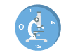
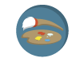

More Website Templates at TemplateMonster.com!
Trabajo 1 articulo 1
-
investigacion
son los avances cientificofico, resultantes del metodo cientificofico, utilizado para la resolucion de problemas, o para buscar la manera de explicar ciertas hipotesis.
- 
experimentacion
Durante dicho estudio se van a ir eliminando o introduciendo todas las variables necesarias que de alguna manera tengan influencia en el. La experimentacion es considerada una de las etapas del metodo cientifico.
- 
creatividad
La Creatividad forma parte de nuestro ADN, es un germen que habita entre nosotros, pero que en muchos casos se mantiene dormido y es necesario despertarlo.
Nuestra universidad Grandes cambios implican grandes mejoras
Nuestros institucion La Universidad Nacional Abierta y a Distancia, (UNAD) es un Proyecto Educativo que nacio con el nombre de Unidad Universitaria del Sur de Bogota, UNISUR durante el gobierno de Belisario Betancur.
Surgio, mediante la Ley 52 de 1981, como un establecimiento publico del orden nacional adscrito al Ministerio de Educacion Nacional y transformada por el Congreso de la Republica mediante la Ley 396 del 5 de agosto de 1997 en la Universidad Nacional Abierta y a Distancia UNAD.
Se creo con el objeto de disenar e implementar programas academicos con la estrategia pedagogica de la educacion a distancia, que fuesen pertinentes con las necesidades locales, regionales, nacionales e internacionales y acordes con los retos y las demandas de una sociedad democratica, participativa y dinamica afines con modelos cientificos, sociales y culturales que contextualizan al siglo XXI.
Desde su puesta en marcha – abril de 1982 -, la Universidad se ha caracterizado por su compromiso con las comunidades y poblaciones que no han tenido acceso a una capacitacion tecnica, socio humanistica y comunitaria. Tambien, por su contribucion a la recuperacion de los tejidos sociales, la generacion de espacios laborales y la formacion para la participacion ciudadana.

En este sitio exponemos herramientas que permitiran un mayor entendimiento frente a los temas encontrados en la universidad nacional abierta y a distancia enfocado al area de o a la escuela de sistemas.
En este sitio podras encontrar diferentes herramientas: Inicio que te ayudaran a entender mucho mas facil, Lecturas, Multimedia Actividadess y poner a prueba tu conocimiento, Autores.